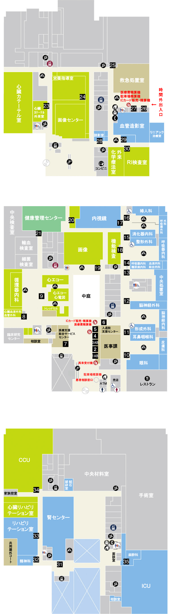
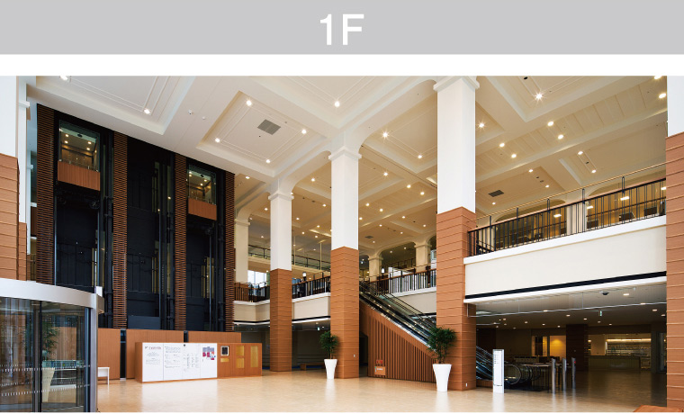
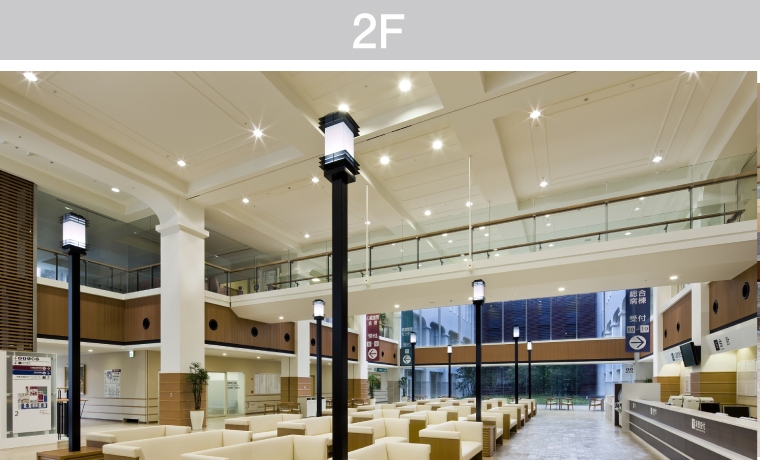
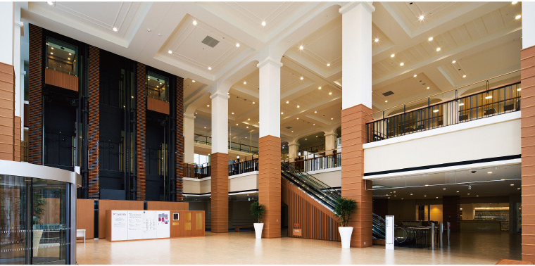
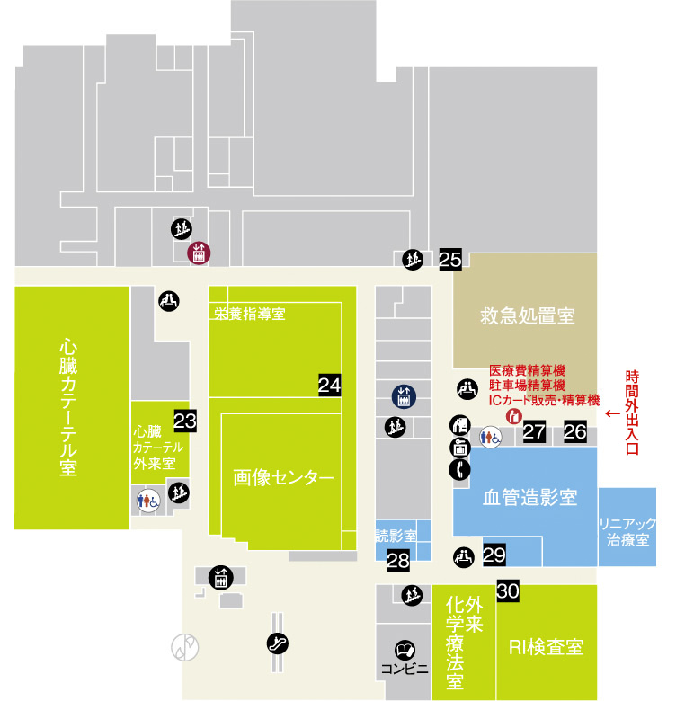
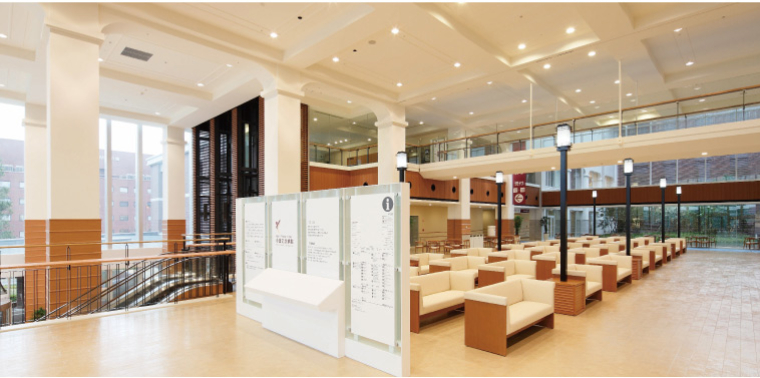
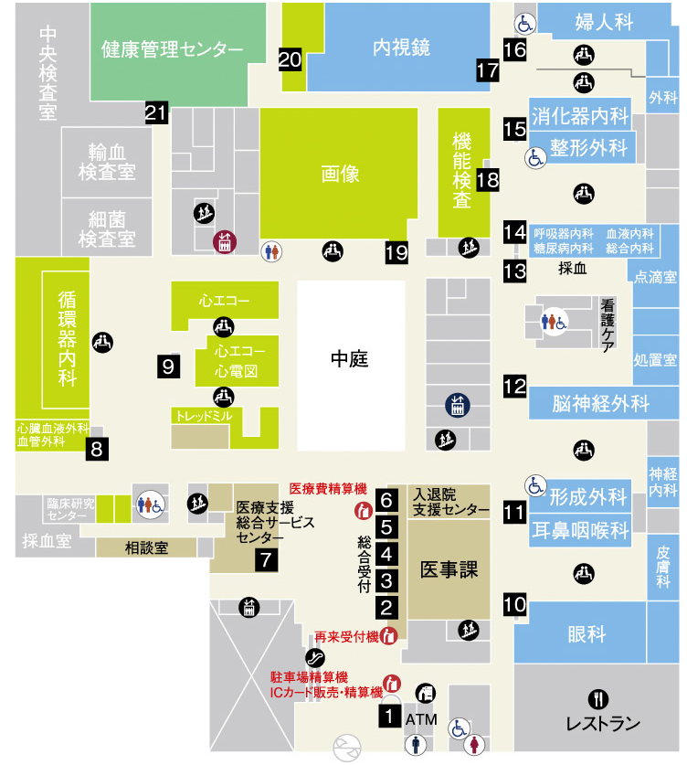
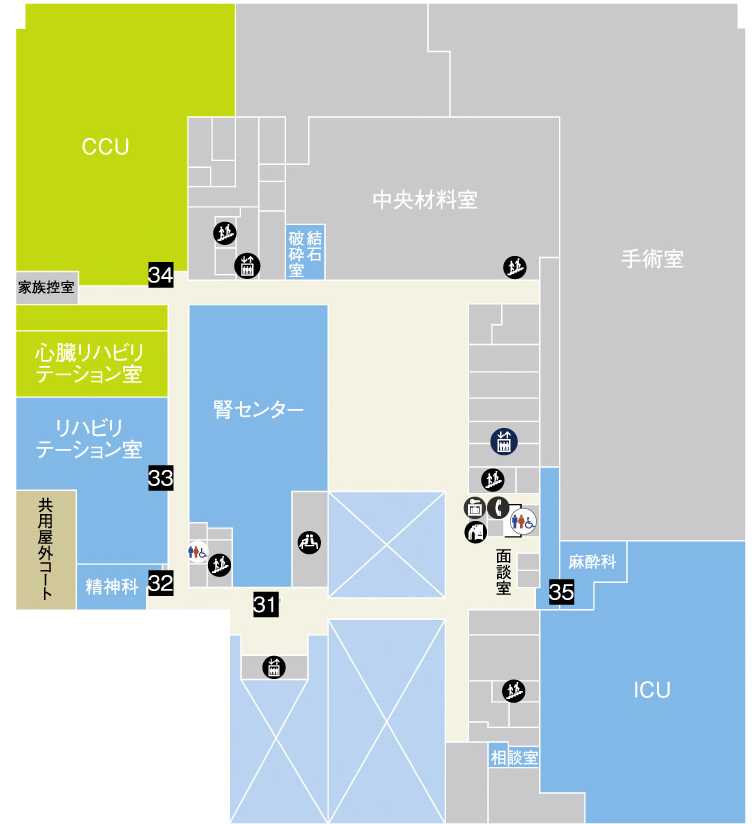
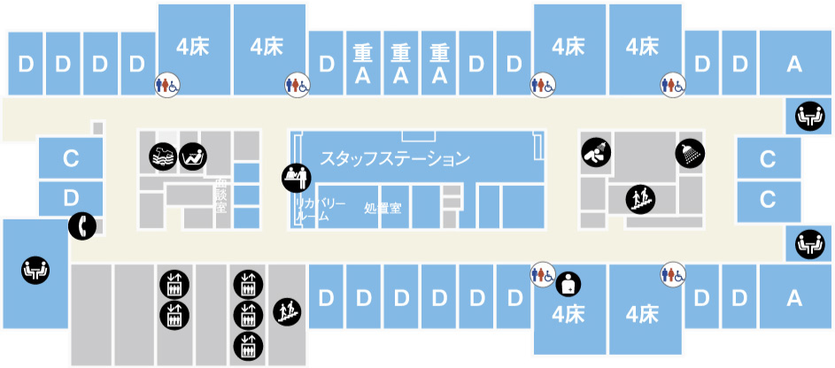
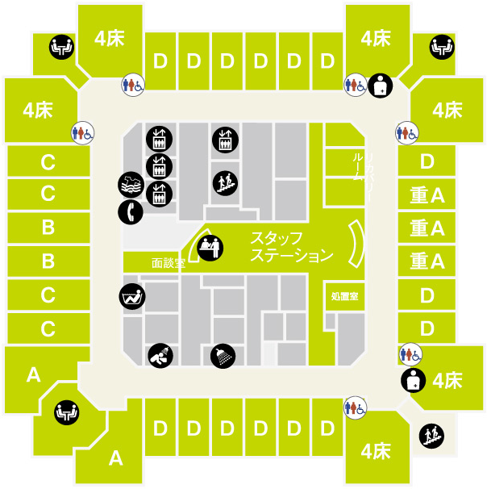

フロアマップ
Floor map下記フロアは、基準階（総合病棟6F〜11F・心臓血管病棟6F〜9F）のフロアマップです。その他、各階によって設備が異なる場合がございます。
総合病棟 5F ： HCU、6F ： SCU、7F ： 無菌室を併設しておりますので病床配置が異なります。 心臓血管病棟 5F ： セミCCUを併設しておりますので病床配置が異なります。
- エレベーター
-
トイレ
(車いす可) -
トイレ
(車いす可) - 公衆電話
-
スタッフ
ステーション - 浴室
- 階段
- 女子トイレ
-
オストメイト
対応トイレ - 自動販売機
-
 レストラン
レストラン
-
デイルーム
デイコーナー - 洗髪室
- エスカレーター
- 男子トイレ
- 待合ラウンジ
- コインロッカー
- コンビニエンスストア
- ランドリー
- シャワー室
- エレベーター
-
トイレ
(車いす可) -
トイレ
(車いす可) - 公衆電話
-
スタッフ
ステーション - 浴室
- 階段
- 女子トイレ
-
オストメイト
対応トイレ - 自動販売機
-
レストラン
-
デイルーム
デイコーナー - 洗髪室
- エスカレーター
- 男子トイレ
- 待合ラウンジ
- コインロッカー
-
コンビニ
エンスストア - ランドリー
- シャワー室


- 心臓カテーテル外来受付
高気圧酸素治療室 - 画像センター受付
［撮影・CT・MR・骨密度測定］ - 薬剤部
- 保安室
- 救急受付
- 受付［放射線科］
- 受付
［外来化学療法室・放射線治療］ - RI受付

- 1A：再来受付
1B：新患受付 - 処方せん窓口
- 3A：会計・料金計算
3B：会計・お支払い
会計・自動精算機 - 診断書窓口
- 入退院受付
- 入退院支援センター
- 医療支援総合サービスセンター
［医療連携課･医療支援課］ - 心臓血管病センター受付
［循環器内科･心臓血管外科･血管外科］ - 心電図･心エコー検査受付
［心電図･トレッドミル･ホルター心電図］
［心エコー･経食道エコー］ - 受付
［眼科］ - 受付
［皮膚科･形成外科･耳鼻咽喉科･頭頸部外科］ - 受付
［脳神経外科･脳神経内科･脳卒中センター］
- 受付
［看護ケア外来・中央処置室・採血室・検尿室］ - 受付
［総合内科・血液内科・呼吸器内科・糖尿病内分泌内科・糖尿病代謝内科・膠原病リウマチ内科］ - 受付
［消化器内科・外科・呼吸器外科・整形外科］ - 受付
［乳腺外科・婦人科］ - 内視鏡センター受付
- 機能検査受付
［ABI・SPP］
［肺機能・聴力・重心動揺P］
［神経伝導速度・誘発電位］
［脳波・自律神経機能］ - レントゲン受付
［撮影・透視・乳房撮影・乳房生検］ - 超音波検査受付
［腹部エコー・血管エコー］ - 健康管理センター受付
- 腎センター受付
［腎臓内科・泌尿器科・血液透析室・腹膜透析室・結石破砕室］ - 受付［緩和ケア精神科］
- リハビリテーション受付
［心臓リハビリテーション］
［理学療法・作業療法］
［言語聴覚療法］ - CCU受付
- 受付［麻酔科］
1F


- 心臓カテーテル
外来受付 - 画像センター受付
[撮影・透視・CT・MR] - 薬剤部
- 保安室
- 救急受付
- 受付［放射線科］
- 受付［外来化学療法室・放射線治療］
- RI受付
2F


- 総合案内
- 再来受付
- 新患受付
- A.料金計算
B.お支払い - 入退院受付
- 入退院支援センター
- 医療支援総合
サービスセンター
[医療連携課･看護相談課] - 心臓血管病
センター受付
[循環器内科･心臓血管外科･血管外科] - 心電図･心エコー
検査受付
[心電図･トレッドミル･ホルター心電図]
[心エコー･経食道エコー] - 受付
[眼科] - 受付
[皮膚科･形成外科･耳鼻咽喉科･頭頸部外科] - 受付
[脳神経外科･神経内科･脳卒中センター]
- 受付
[看護ケア外来・中央処置室・採血室・検尿室] - 受付
[総合内科・血液内科・糖尿病・内分泌・代謝内科] - 受付
[消化器内科・外科・呼吸器外科・整形外科] - 受付
[乳腺外科・婦人科] - 内視鏡センター受付
- 機能検査受付
[頚部血管エコー・ABI・SP]
[肺機能・聴力・重心動揺P]
[神経伝導速度・誘発電位]
[脳波・骨密度・自律神経機能]
[サーモグラフィー] - レントゲン受付
[撮影・透視・乳房撮影・乳房生検] - 超音波検査受付
[腹部エコー・血管エコー] - 健康管理センター受付
3F

- 腎センター受付
[腎臓内科・泌尿器科・血液透析室] - 受付
[精神科]
- リハビリテーション受付
[心臓リハビリテーション]
[理学療法・作業療法]
[言語聴覚療法] - CCU受付
- 受付
[麻酔科]
5F～11F[総合病棟 病床フロア]

5F～9F[心臓血管病棟 病床フロア]
